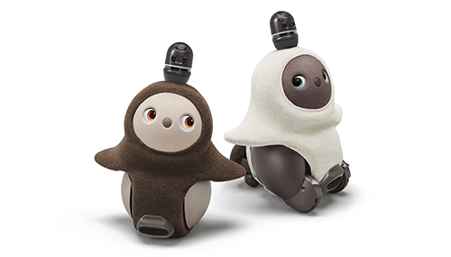

This is where we would talk about updates to latest robot models and their functions. Though as of late, there isn't much to report considering we are in a pandemic and all. During CES convention, the world was shown some new robots, some of which are actually kind of interesting to read about. Here are the 3 most interesting ones to learn about. Let's see more below!
Charmin's Rollbot is a little bear like robot with no arms, hands or thumbs, will connect you with your phone in order to balance toliet paper. This would be usefull when you're in a pinch and don't have any toliet paper around, the robot would deliver it to you. Link for Robot #1
This next bot is a little like an emotional support animal. Groove X's huggable robot LOVOT is a cross between a bear and an owl and is very unique personality and also a unique voice. It's connected via an app and once it's configured, there's only fun to be had. It's even the picture above! Link for Robot #2
Last, but certainlly not least is our waiter bot called the BellaBot. This little cute cat themed waiter is purrfect for any kawaii-themed japanese resturant. It meows when plates are needed to be picked up and it helps to transport consumers food. Link for Robot #3